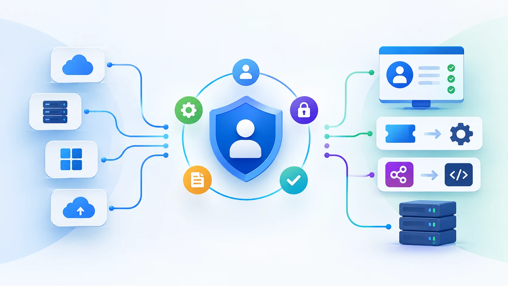

What a Cloud and On-Premises Identity Governance Strategy Should Cover
Building an effective strategy means addressing identity lifecycle, access governance, application integration and ongoing access reviews as part of one framework. The following areas are central to making that approach work across cloud and on-premises systems.
1. Start With Your Identity and Application Landscape
Before implementing an identity governance solution, organisations need to understand what they are actually trying to govern.
This includes identifying where employee and other user identities originate, which applications they need to access, where those applications are hosted, and how access is currently provisioned and reviewed.
The environment may include:
- HR systems or other authoritative identity sources
- Active Directory and other on-premises directories
- Cloud applications and services
- Legacy or home-grown applications
- Applications with APIs
- Applications that require manual or ticket-based provisioning
This assessment helps establish where access is being managed consistently and where gaps exist. It also helps determine how different applications should connect to the governance platform.
2. Connect Identity Lifecycle to Access
Identity governance needs to follow the employee lifecycle. When someone joins the organisation, they need the right access for their role. When they move to another role, their access may need to change. When they leave, access needs to be removed.
Managing these changes manually across cloud and on-premises systems can leave room for delays and forgotten permissions.
An IGA solution can connect these lifecycle events to access management.
This creates a more consistent process for managing access as people and responsibilities change.
3. Govern Access Across Cloud and On-Premises Systems
An enterprise running both cloud and on-premises systems also needs a consistent way to decide who should have access to what.
This goes beyond simply creating user accounts. Organisations need to manage access requests, approvals, roles, permissions and conflicting combinations of access.
An identity governance solution can support this through capabilities such as:
- Role-based access management
- Access requests and approval workflows
- Role management and role mining
- Access certification
- Segregation of Duties (SoD) controls
This provides a governance layer that can be applied across the organisation rather than managing access differently for every application.
4. Account for Applications Without Modern Integrations
One of the practical challenges when cloud and on-premises systems run side by side is that not every application will have a modern API. This can make it harder to bring legacy and home-grown applications into the same provisioning and governance processes as newer cloud applications.
An IGA solution therefore needs to accommodate different application architectures and integration requirements. Where standard API-based integration is not possible, organisations may need alternative ways to manage provisioning and access.
For example, IamLogic IGA supports different integration approaches, including Python-based connectors for custom and home-grown applications. Where API-based provisioning is not available, ticket-based workflows can be used through platforms such as ServiceNow and Zoho Desk, allowing these applications to remain within the identity governance framework.
5. Make Access Reviews Part of the Strategy
Granting access is only one part of identity governance. Organisations also need to review whether that access remains appropriate as roles, projects and responsibilities change.
Access certification provides a structured way to review, approve or revoke access and maintain records for audit purposes.
Regular reviews help organisations identify outdated or excessive access before it becomes a governance issue.
6. Choose the Right Deployment Model
Enterprises may also have different requirements for where identity data and governance infrastructure should operate.
Some organisations may prefer to keep identity infrastructure within their own data centre. Others may run it in a private cloud.
A cloud identity governance solution should therefore fit the organisation's infrastructure and regulatory requirements rather than forcing a single deployment model.
Making Identity Governance Work Across Cloud and On-Premises Systems

The real challenge when cloud and on-premises systems run side by side is not managing each system individually. It is maintaining a consistent governance process as identities and access move across systems with different capabilities.
An IGA solution can provide that continuity by connecting lifecycle management, access decisions, provisioning and reviews within one governance framework.
IamLogic IGA brings these capabilities together through its provisioning and connector framework. It supports Python-based connectors for enterprise applications, while ticketing workflows through platforms such as ServiceNow and Zoho Desk provide a provisioning route for applications without APIs. This allows organisations to govern access across applications with different integration requirements.
For an enterprise running both cloud and on-premises systems, that consistency is what turns identity governance from a collection of disconnected controls into a strategy.